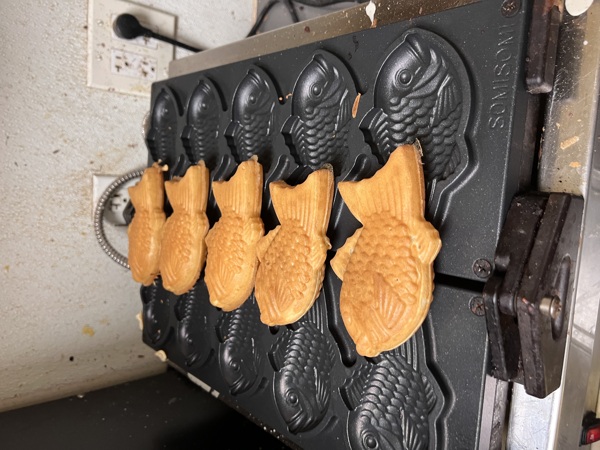
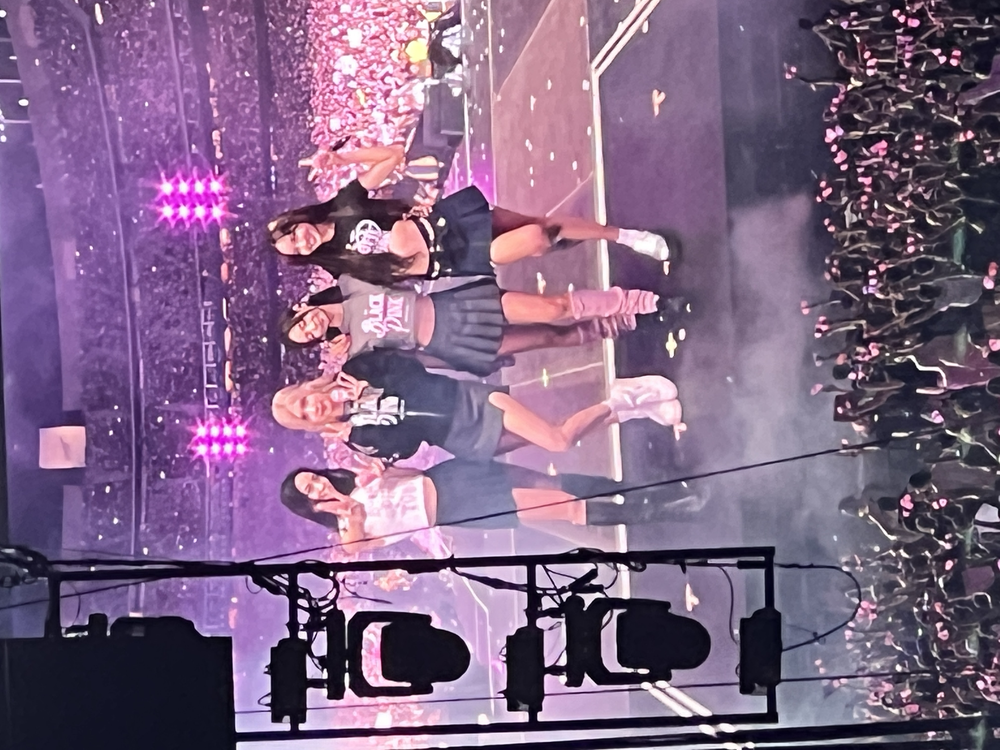
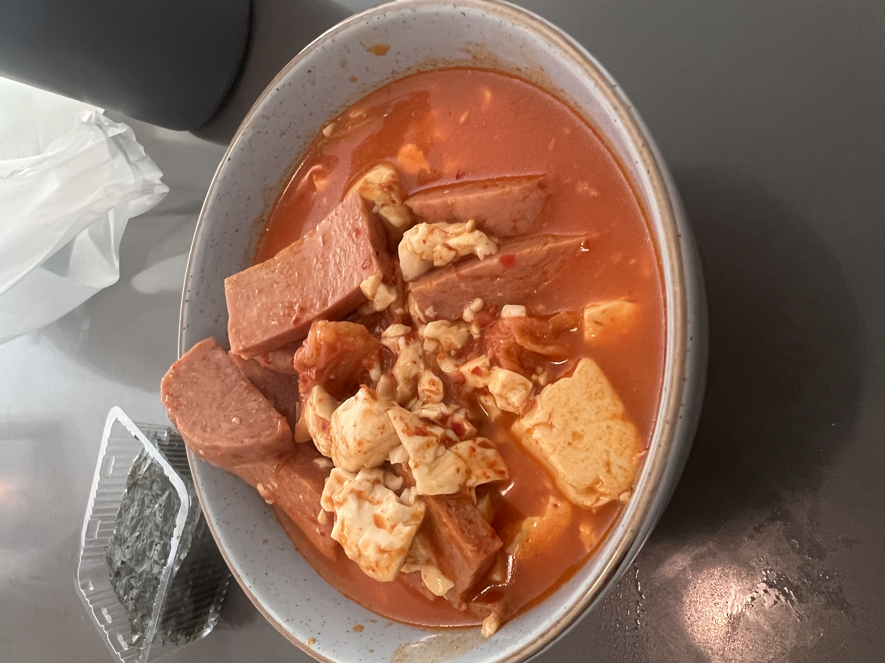
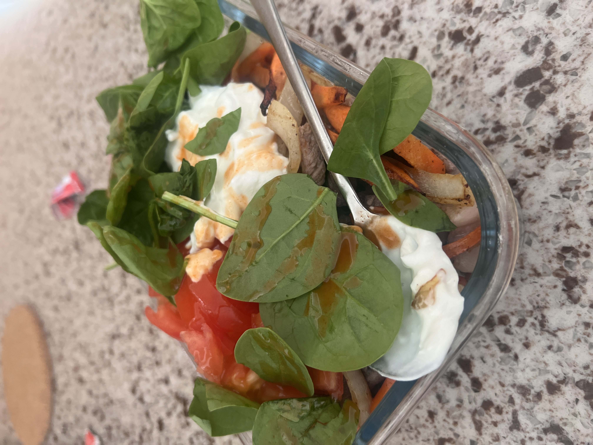

Daniel Kim
My name is Daniel Kim, and my journey through life has been defined by a relentless pursuit of knowledge, a deep-seated passion for sports, and an unwavering commitment to my career aspirations in the field of biology. From a young age, I've been driven by a thirst for learning and a love for basketball. Growing up, I found joy and fulfillment both in the classroom and on the court, where I honed my skills and forged lifelong friendships through the game. As I entered the University of California, Riverside (UCR) for my undergraduate studies, I knew I wanted to delve deeper into the mysteries of the natural world. That's why I chose to major in biology, eager to explore the intricate workings of life at a cellular level and beyond.
In addition to my academic pursuits, I've always had a passion for Formula 1 racing. The speed, precision, and technical innovation of the sport have captivated me since childhood, and I eagerly follow each race, immersing myself in the world of motorsports. During my time at UCR, I've sought out opportunities to expand my knowledge and gain real-world experience in my field. One such opportunity was an internship at Sul and Bean, where I gained invaluable insights into the intersection of biology and industry, further fueling my passion for the sciences. As I navigate through my second year at UCR, I remain dedicated to my studies and to cultivating my interests outside the classroom. Whether I'm shooting hoops with friends, analyzing race strategies in F1, or exploring the great outdoors, I approach each day with enthusiasm and a thirst for discovery.
Looking toward the future, I envision a career dedicated to making meaningful contributions to the field of biology, whether through research, education, or environmental conservation. With my boundless curiosity and unwavering determination, I'm excited to see where this journey takes me and the impact I can make along the way. In every aspect of my life, I strive to embody the qualities of a lifelong learner, a dedicated athlete, and a passionate advocate for the sciences. With each new challenge and opportunity, I am committed to pushing myself to new heights and making a positive difference in the world around me.
Experience
Cashier
• Worked at Sul and Bean
• Was head cashier
• Experience with customer service and leadership
KCM Fafsa
• Responsible for leading 2 freshman
• Create a lasting relationship with them
Milal Mission
• Helped take care of people with disabilities
• Interned for about one year
Education
UC Riverside
Portfolio



